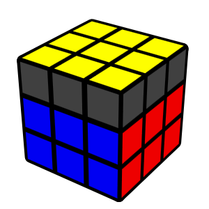

CFOP Method
The CFOP method (Cross, F2L, OLL, PLL) is the most popular speedcubing technique used by top 3×3 solvers worldwide. It breaks the cube into four main solving stages to achieve maximum efficiency and speed.
Cross
Solve the white cross by aligning edge pieces with their matching centers, forming a base for F2L.

F2L
Pair up and insert the corner-edge pairs to complete the first two layers simultaneously.
OLL
Orient the last layer pieces so all stickers on top face the same color, using one of 57 algorithms.
PLL
Permute the last layer to finish the cube — positioning all pieces correctly to complete the solve.
Mastering CFOP takes time, but with practice, it can bring your average solve time under 10 seconds.